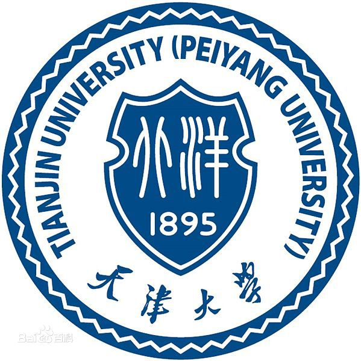
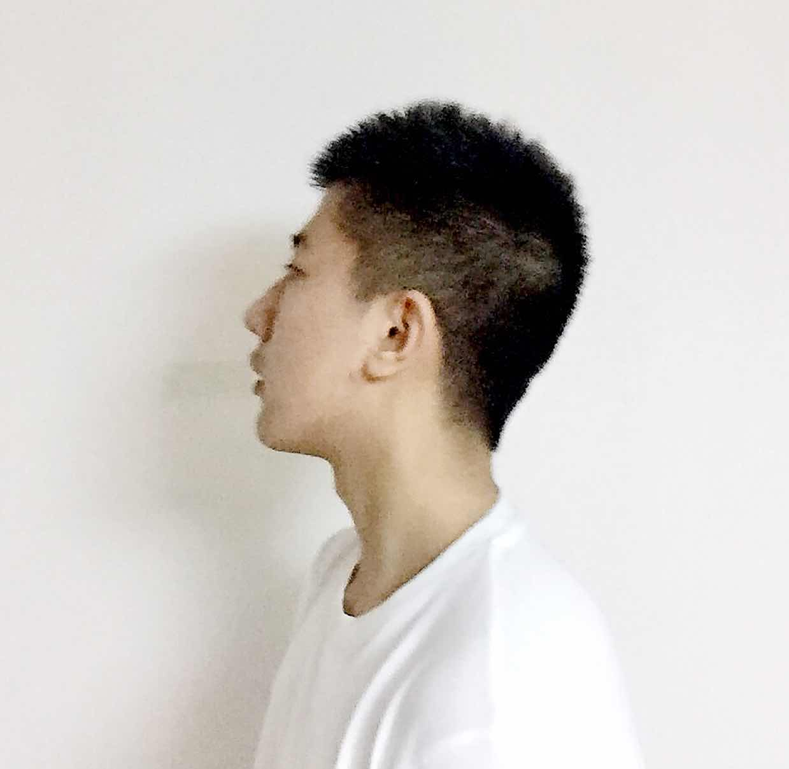
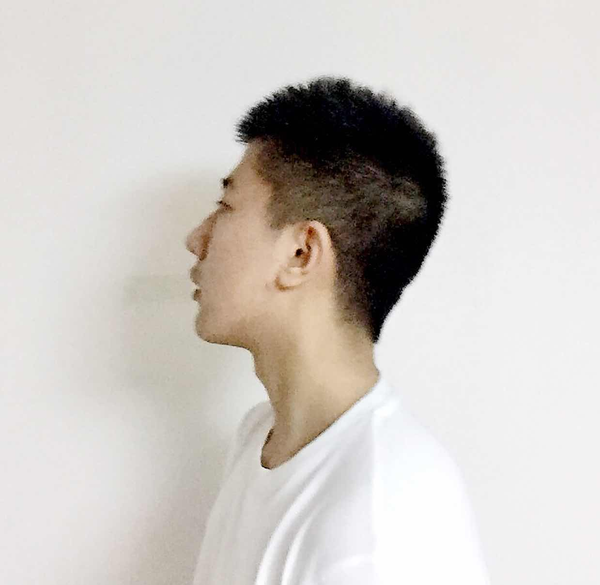

北洋前端小分队
 

北洋前端小分队
团队介绍
我们团队的4位成员均是毕业于天津大学，现在都在从事着软件类的工作，因而取名北洋前端小分队。我们中有熟悉前端开发的，有熟悉后台开发的，有熟悉移动端开发的，有做产品的。希望通过这次百度前端技术学院的学习和交流，锻炼提升我们的能力。请其他队伍的同学也对我们的作业多多指教，多多交流~
队员介绍
马一翔：队长。毕业于天津大学计算机学院。北京工作一年。客户端工程师。
付兰：毕业于天津大学精仪学院。工作为软件后台开发，.net工程师。
薛凌燕：天大信息学院2016届硕。天外天工作室学习过前端，前端开发和软件测试开发两次实习经历。致力于从事软件类的工作。
侯易：天大机械学院大四学生，致力于成为一名产品经理。